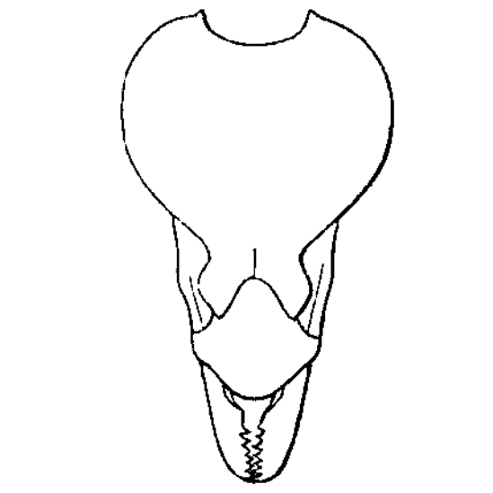
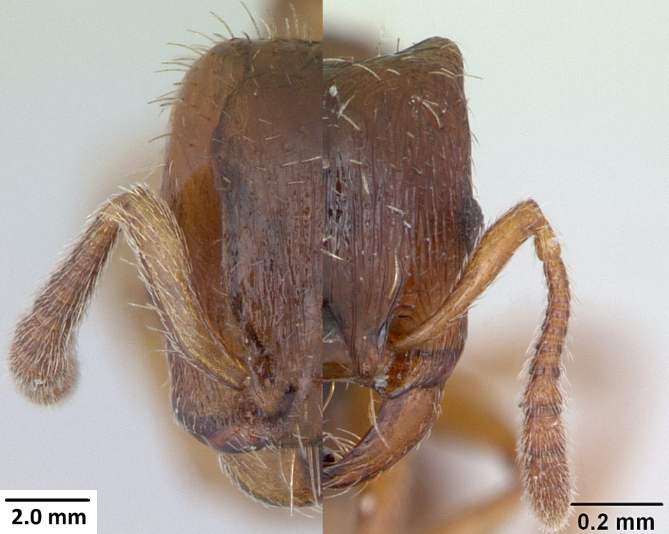
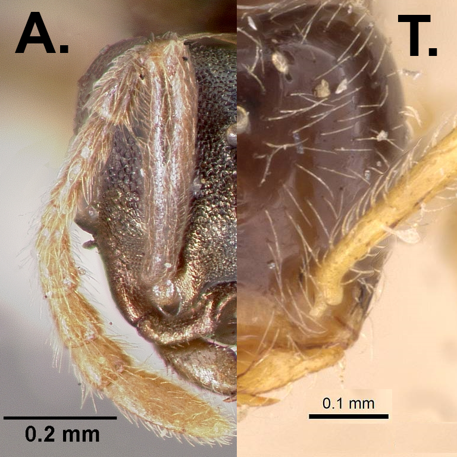
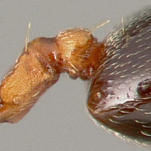
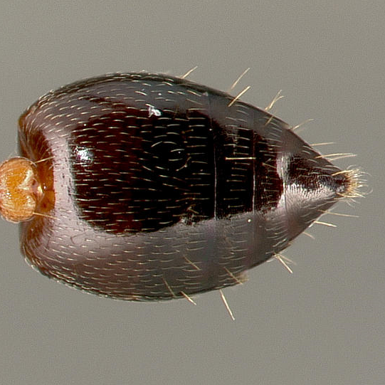
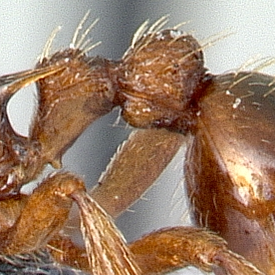
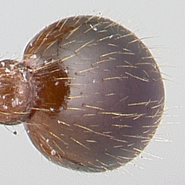

Myrmicinae Subfamily  C. Emery Funiculus max. 5 articles Head heart shaped infview Wester Palearctic argiola,baudueri,benten canina,bircothrix,Hexamera Hirashimai,Hiroshimensis incerta,japonica,kichijo leptothrix,masukoi,mazu membranifera,morisitai,mutica rostrataeformis,Sauteri tenuipilis,tenuissima,terayamai  AntWeb Sword- or shear-like mandibles : Strongylognathus(right) Harpagoxenus (left)  AntWeb Cly far pressed in : anergates Cly almost flat : Teleutomyrmex  AntWeb PPE dorsal in t1 insered Gaster heart shaped in dview  AntWeb South Palearctic, in Northern in artificially warm compounds afghanica, antaris, auberti aegyptiacus inermis, ionia laestrygon, lorteti, matsumurai nawai, oasium osakensis Schmidti, Scutellaris Sordidula, Sp. 5 Subdentata, Suehiro teranishii, vagula  AntWeb PPE median or ventromedian in t1 insered Gaster heart else shaped in dview  AntWeb Whole palearctic up to 73 °N Formicoxenini Melissotarsini Myrmicini Pheidolini Solenopsidini Stenammini Tetramoriini